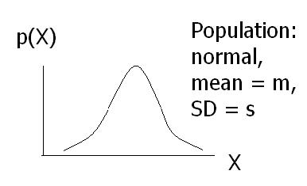
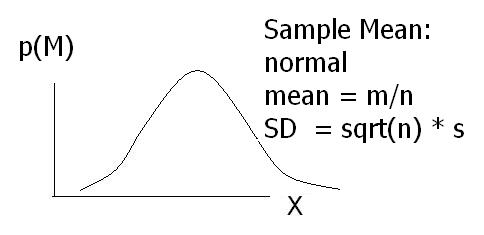

(A.) From many patients scheduled to undergo the operation, a single patient is randomly selected, and friends/family are put in the recovery room with the patient for the first 48 hours. The patient recovers in 20 days. Using a .05 significance level, what should the researcher conclude? Be sure to draw pictures of the relevant population and sampling distributions, with axes clearly labeled, and be sure to explain your steps.
(B.) From many patients scheduled to undergo the operation, four patients are randomly selected, and friends/family are put in the recovery rooms with the patients for the first 48 hours. The four patients recover in an average (i.e., mean) of 20 days. Using a .05 significance level, what should the researcher conclude? Be sure to draw pictures of the relevant population and sampling distributions, with axes clearly labeled, and be sure to explain your steps.
(C.) From many patients scheduled to undergo the operation, nine patients are randomly selected, and friends/family are put in the recovery rooms with the patients for the first 48 hours. The nine patients recover in an average (i.e., mean) of 20 days. Using a .05 significance level, what should the researcher conclude? Be sure to draw pictures of the relevant population and sampling distributions, with axes clearly labeled, and be sure to explain your steps.
(D.) In the previous three parts, the mean recovery time of the samples was the same, but the conclusion wasn't always the same. Why?
(A.) Consider the diagrams below. Assuming that the diagram of the population is accurate, find at least three mistakes in the diagram of the distribution of sample means. (Note: "n" is the sample size.)
|  |  |
(B.) If the population distribution were multi-modal and skewed, would the sampling distribution of the mean be multi-modal and skewed if n=1?
(C.) If the population distribution were multi-modal and skewed, would the sampling distribution of the mean be multi-modal and skewed if n=100?
(A)-(C). For each of parts (A), (B) and (C) of the first exercise, determine the 95% confidence interval for the population mean, based on the sample mean and the assumed population SD.
(D.) Suppose we select nine patients at random who are about to undergo the surgery explained in the first exercise. They do not have family/friends in the recovery room with them. We measure their recovery times, and based on that sample, we construct a 95% confidence interval. What is the probability that the confidence interval includes the value 15?
(E.) Suppose we select nine patients at random who are about to undergo the surgery explained in the first exercise. They do not have family/friends in the recovery room with them. We measure their recovery times, and based on that sample, we construct a 99% confidence interval. What is the probability that the confidence interval does not include the value 15?